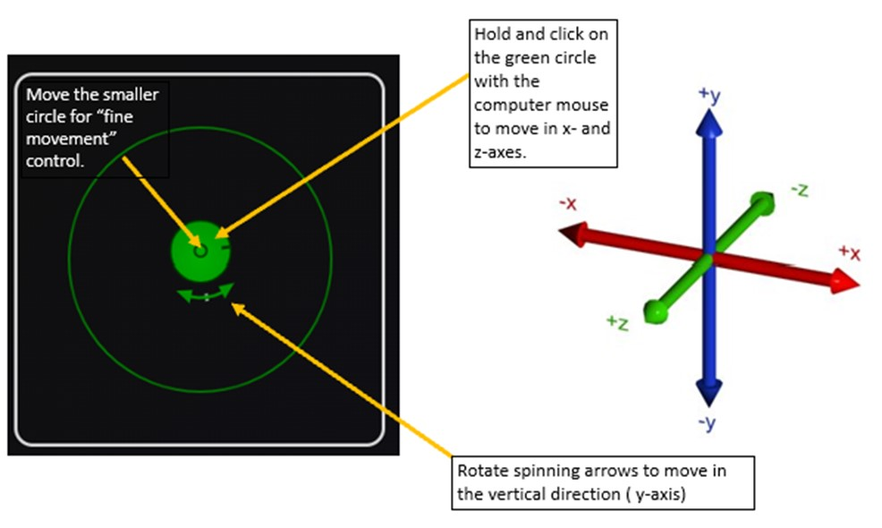
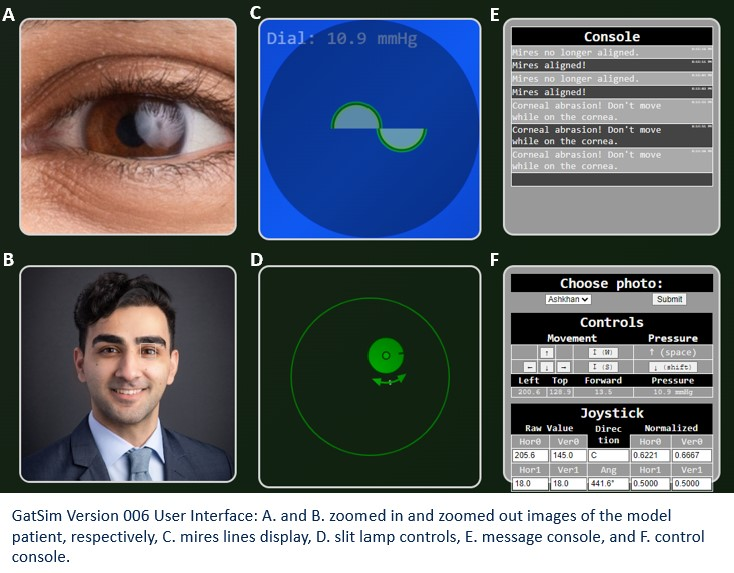

GAT Simulation
Instructions:
How to Use the Goldmann Applanation Tonometry (GAT) Simulator:


Image References: Coordinate Axes Image by: Arturo Reina
Image References: Coordinate Axes Image by: Arturo Reina
requires a high degree of skill to operate. Appropriate training to therefore essential. We developed a free online simulator,
GatSim, which mimics the steps of GAT. New trainees can now train on our model before seeing patients, which may ultimately improve outcomes.
Repo: https://github.com/ryerrabelli/TonometrySimulation
Contact:
ahojati2@illinois.edu
Controls | ||||||
|---|---|---|---|---|---|---|
Movement |
Pressure |
|||||
|
|
||||||
| Left | Top | Forward | Pressure | |||
Joystick |
||||
|---|---|---|---|---|
| Raw Value | Direc tion | Normalized | ||
| Hor0 | Ver0 | Hor0 | Ver0 | |
| Hor1 | Ver1 | Ang | Hor1 | Ver1 |
Console | |
|---|---|